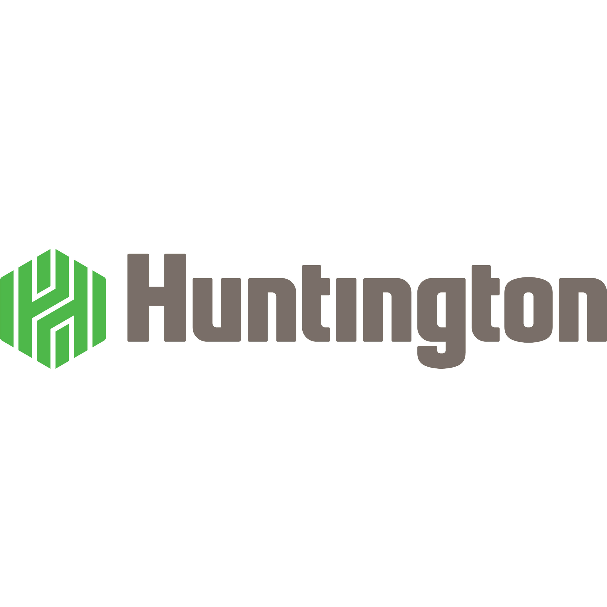
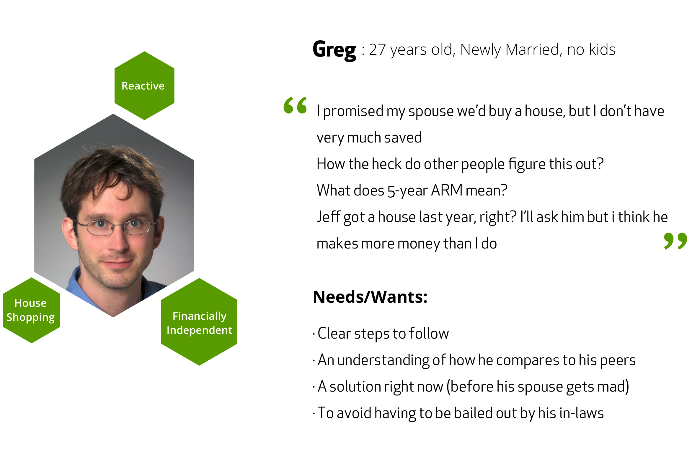
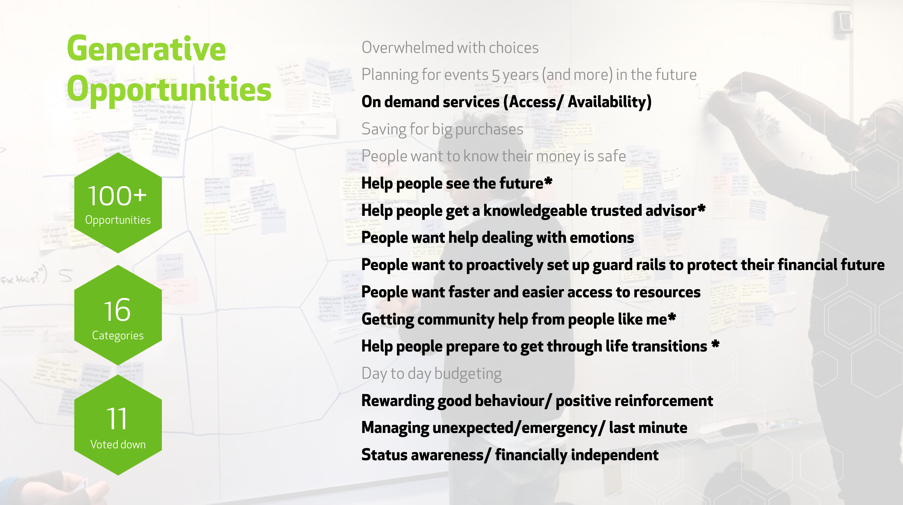
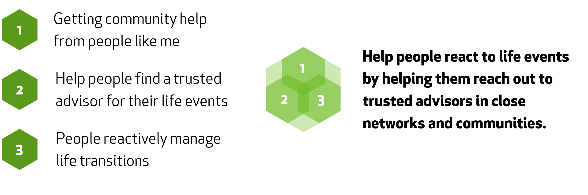
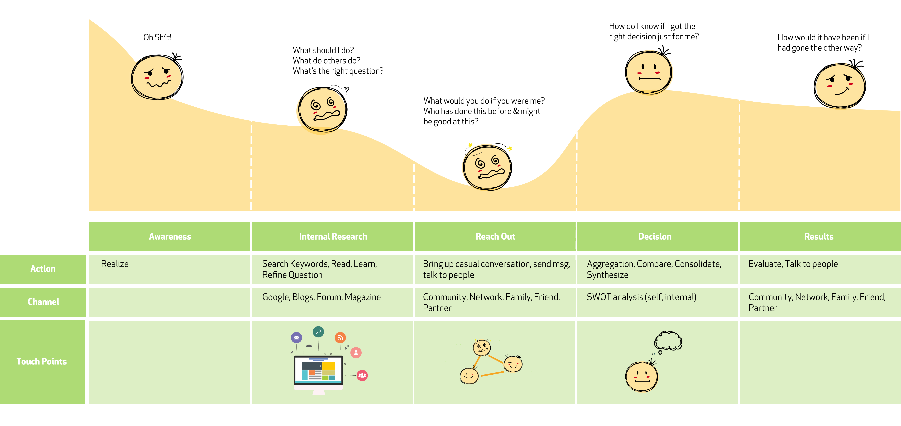
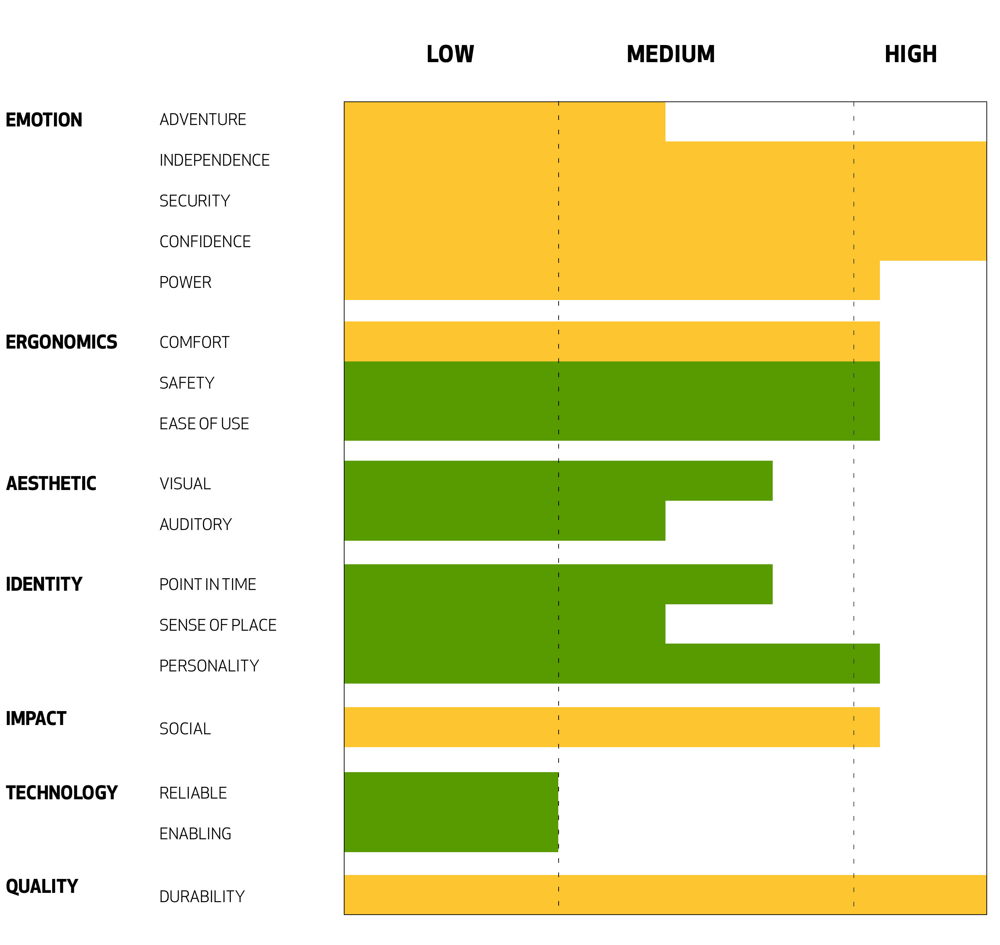
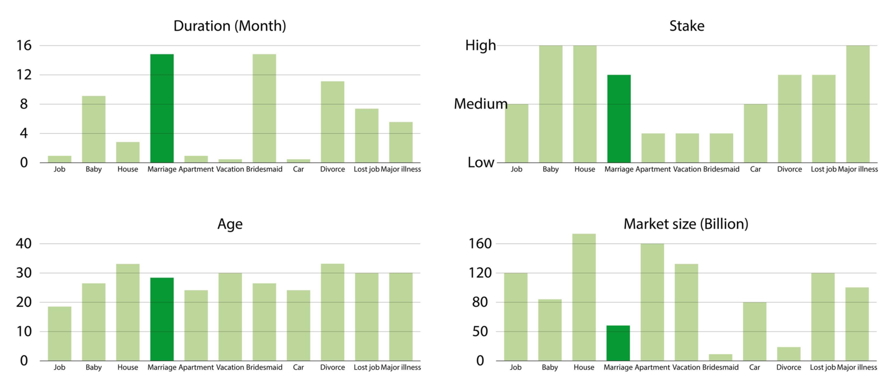
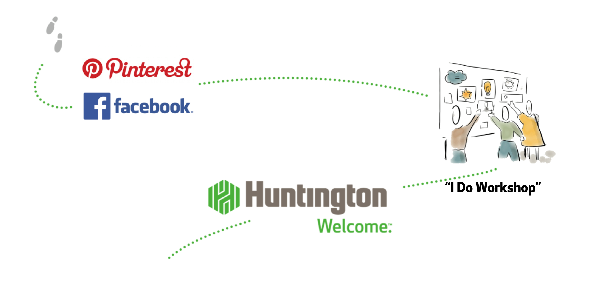
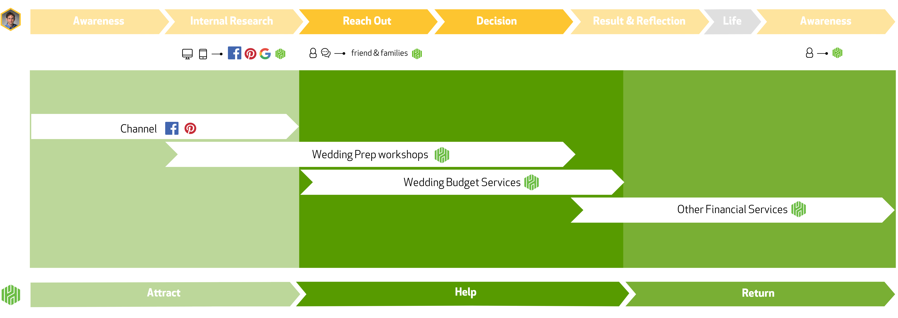
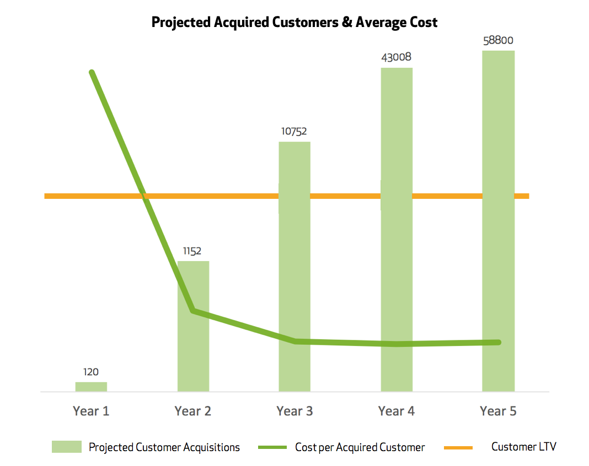

Capstone
Huntington Bank

This is a 4 months capstone project of the CMU MIIPS's program. Our team FIDO worked with Huntington Bank to develop a solution to help Huntington become the first financial expert people think about when they are experiencing life events.
Client
Huntington Bank
My Role
Lead Interaction & Visual Designer
Team
Daksh, Elvin, Meg, Menghui, Tina, Yifei
Time
4 months
Scope
Life Events
People need financial advice at life events, but they don’t turn to banks first. When preparing for or during a life event, how can Huntington Bank be the resource to which consumers turn first to be a trusted financial advisor?
Phase 1
Product Opportunity
In order to frame the opportunity space for this project, we began by examining the social, economic, and technical factors (SET factors) that are a reality for the customers who are the target for thisproduct or service, and that support or hinder Huntington in developing, implementing, andpromoting a solution. We identified over 75 of these factors, but have summarized the most salient factors here.
As our problem space is for life events, we define people having their first job, first car, first appointment, first house, first marriage and first child as the age of first, and we found they are the ones who needs the most help. As the age of first, people are mostly reactive and they seldom plan. So we decided to focus on the reactive personality Greg:
Keeping Greg and SET factors in mind, we brainstormed for opportunities. Here are 11 out the 16 categories of ideas that we find interesting.
Through talking to people around life events, we were able to identify three key insights:
1.People do reach out to their communities for advice. The communities vary from explicit advice centers (similar to Quora) to socialnet works (like churches or clubs). People are often reaching out to these communities to confirm advice they received from another source.
2.People don’t think about transitions until they’re in them. In additionton to knowing the state of variables like income and location, planning for the future is stressful and people prefer to avoid it.
3.People reach out to trusted experts for advice, but criteria for “trusted” and “expert” vary. Some people prefer to reach out to professionals with confirmed track records, while others prefer to reach out to family members or friends without an“ulterior profit motive”.
These customer insights overlap heavily so we combined them into our final product opportunity: Helping people react to life events by helping them reach out to trusted advisors in their close networks and communities.

Phase 2
Narrowing down and research
In this phase, we analyzed customer interviews, surveys, subject matter experts and literature to understand the way people deal with life events as well as stakeholders and Huntington's competitive landscape. We tried to use journey map and roleplay scenarios to understand Greg and his situation better.
We also compared Huntington with 4 other banks to understand Huntington's value opportunities and to identify what values should the product offer.

Phase 3
Ideation
Before ideation, we decided to focus on one life event so our solution can be more specific and Huntington can carry it out easily. We chose marriage because it has a long duration, the stake is high, it has a big market size, and the age of marriage happens pretty early.
We brainstormed 100 + ideas, sorted them into 18 categories, evaluated the value and start doing quick prototyping sessions. Here are a few ideas we prototyped.
The one we decided to move forward was the "I DO Workshop".

Phase 4
Solution
The three pillars of our solution is attract, help and bring back. Thus we refined detailed deliverables for the "IDO Workshop" accordingly. Our deliverables include marketing plans, proposed class topics, the flexible branch design, the follow-up individual help, training plans, a digital solution and physical and digital ads.
Due to NDA, we are not able to show the details of the solution. Here is a glimpse of the digital companion for life events which is designed so that it can be seamlessly embedded into Huntington's current digital solution.
We understand how important financially feasible is to banks, so we also did cost analysis to make sure the cost for the "IDO Workshop" is lower than a customer's life time value for Huntington.
During 4 months, we were able to help Huntington Bank define product to engage customers at the age of first. Our solution is a three year vision with detailed rollout plans that was easy for Huntington to carry out.
We presented multiple times to manager from Huntington Bank and they were very excited about the outcome and followed up with us on details of the design.